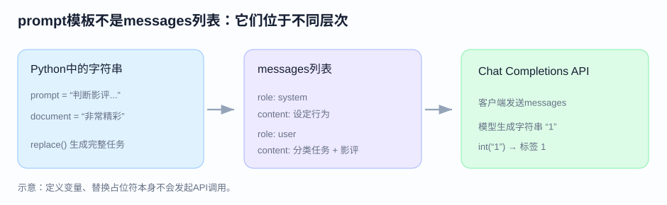
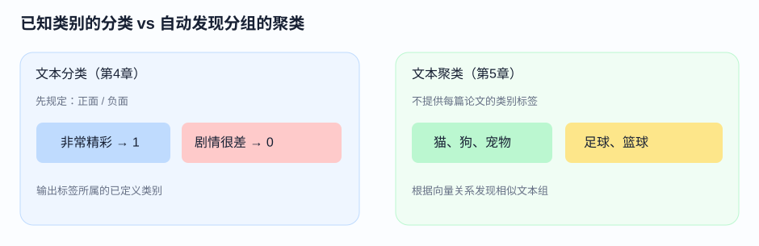

《图解大模型：生成式 AI 原理与实战》 · 第111–116页
本日包含上次问答补充、第4章小结，以及第5章开篇内容。在书中的 Python 代码中，prompt 是任务模板字符串，而 messages 是带有 role 和 content 的消息列表。它们不是同一层级的数据。
prompt = "判断影评：[DOCUMENT]。正面1，负面0。"
document = "这部电影非常精彩"
task = prompt.replace("[DOCUMENT]", document)
messages = [
{"role": "system", "content": "You are a helpful assistant."},
{"role": "user", "content": task}
]
| 元素 | 作用 |
|---|---|
| prompt | 保存可复用的任务指令模板 |
| document | 此次要分类的实际文本 |
| system 消息 | 说明整体行为要求 |
| user 消息 | 提供具体指令与评论文本 |
| messages | 把消息组织为一次 API 调用的输入 |
注意：replace() 只是在程序中替换字符串，并不会联系模型。模型直到收到 client.chat.completions.create(messages=messages,...) 才开始处理请求。
例子 A：System 规定“回答要简洁”，User 说“这部电影精彩，正面回复1”，模型可能回复 1。
例子 B：System 规定“用 JSON 输出”，User 仍然提供同一条评论，模型可能回复 {"label":1}。
模型的行为变化来自本次消息要求，不等于模型权重发生改变或重新训练。在原书第111页，System 只有一句助手身份说明，情感分类的核心任务要求放在 User 中。
| 模型类别 | 方法 | 核心思路 |
|---|---|---|
| 表示模型 | 特定任务模型 | 直接使用经过分类训练的模型输出标签 |
| 表示模型 | 嵌入模型 | 先把文本变成向量，再用分类器或标签相似度确定类别 |
| 生成模型 | FLAN-T5 | 根据指令生成类别文本 |
| 生成模型 | GPT-3.5 | 通过 API 按提示词输出分类标签 |
第4章的核心问题：已经有“正面/负面”等目标类别，如何将新文本正确分入这些类别？
第5章转向无监督技术：不给每条文档人工标注类别，让算法根据文档的语义内容、含义和关系将相似文本分组。书中用猫、狗；足球、篮球；意面、披萨等文本作为示意。
文本聚类：主要解决“哪些文档在一起？”；主题建模：进一步解决“每一组在讨论什么？”例如把一组动物相关文档命名为“宠物”。
分类与聚类的区别不是输入能否使用 Transformer，而是监督信息和任务目标不同。第5章将结合嵌入模型、降维和聚类方法。
书中介绍的通用流程：① 为文档生成嵌入向量 → ② 对向量降维 → ③ 使用聚类模型分组。
嵌入向量使文本含义可被数值计算；降维有助于后续聚类；聚类寻找语义相近的文档集合。为什么用特定嵌入模型、怎么降维和怎样检查簇，将在后续逐段学习。
下一次按原书先阅读第5.1节关于 ArXiv 计算与语言文章的数据集，再学习第5.2节的完整流程。
在这段代码中，prompt 是字符串模板，而 messages 是包含多条带角色消息的列表。prompt 的填充结果被放进其中一条 User 消息。
不是。改变的是当前请求的指令，模型参数没有因此更新。
分类通常根据已定义的目标类别分配标签，而无监督聚类尝试从无人工类别标签的文本中发现相似组别。
嵌入文档、对嵌入向量降维、对降维后的向量聚类。
选中正文文字后，可选择「高亮」或「添加批注」：高亮只显示底色；批注显示下划线，点击下划线可查看批注。

一个字符串变量与一个消息列表属于不同的数据结构。假设 prompt="判断：[DOCUMENT]"，document="电影很精彩"，先用 replace 得到完整的文本指令；再把它放入 {"role":"user","content":...}。这样才能和其他消息一起传入 client.chat.completions.create()。
不需要。书中只是给了一个简单例子。system通常用来提出跨任务的要求；user放入当前要处理的具体文本。这里的角色不是模型架构中的Encoder或Decoder，而是API输入数据的一部分。
prompt、document、messages 都只是在Python内存中创建数据；调用API时才会向服务器发送请求。客户端返回的 choices[0].message.content 通常是字符串，接下来才能转换成数字标签。
第4章电影影评已经规定了“正面”和“负面”两种类别，所以任务是把新影评分到已定义类别中。第5章的论文摘要没有预先为每一篇给出所属研究主题，而是利用文本嵌入将语义相近的摘要组织成若干组。
注意：聚类产生的簇编号不是自然语言主题名。后面BERTopic会利用关键词进一步说明每个簇的含义。
| 路线 | 输入给模型的是什么 | 如何得到结果 |
|---|---|---|
| 特定任务分类模型 | 评论文本 | 模型分类头产生类别分数 |
| 嵌入模型 + 分类器 | 先将评论编码成向量 | 使用外部分类器预测标签 |
| 嵌入模型零样本分类 | 评论向量 + 标签描述向量 | 利用语义相似性匹配标签 |
| FLAN-T5 / GPT类生成模型 | 任务指令 + 评论 | 通过生成词语或数字形式的答案进行分类 |
分类要求事先知道类别，这不总是现实。你拿到几万篇论文时，可能无法预先列出它们属于哪些研究方向。聚类的价值是在没有逐条人工类别标签的情况下发现结构；但聚类仍然需要依赖合理的向量表示、降维参数和算法选择。
因为prompt变量在这段代码中只是字符串，而user消息中的content本来就是存放文本内容的位置。先把document填入prompt，再放进content即可。
不意味着。簇编号只是算法给分组的标识，还需要检查文档内容，或进一步用主题建模输出关键词。